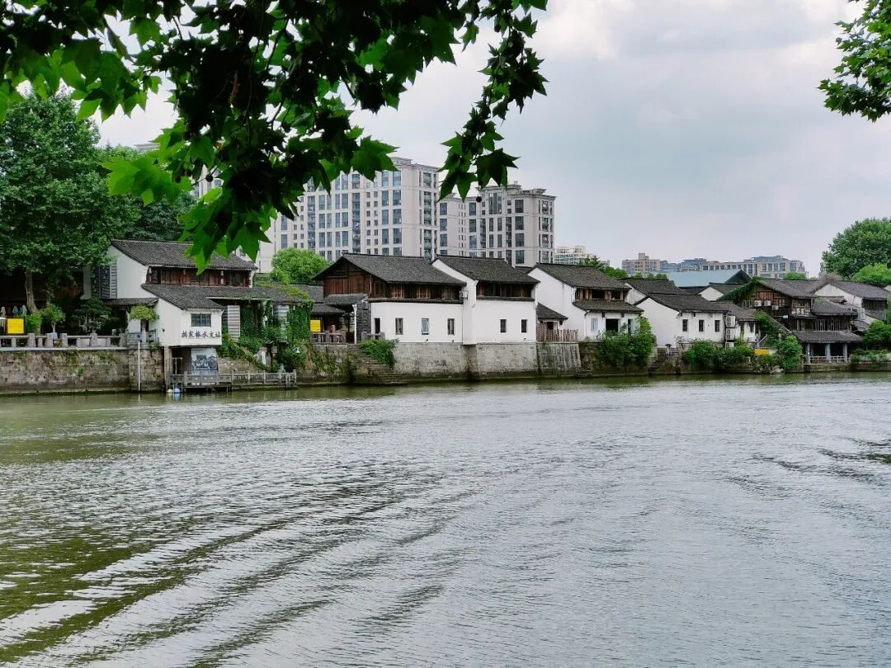
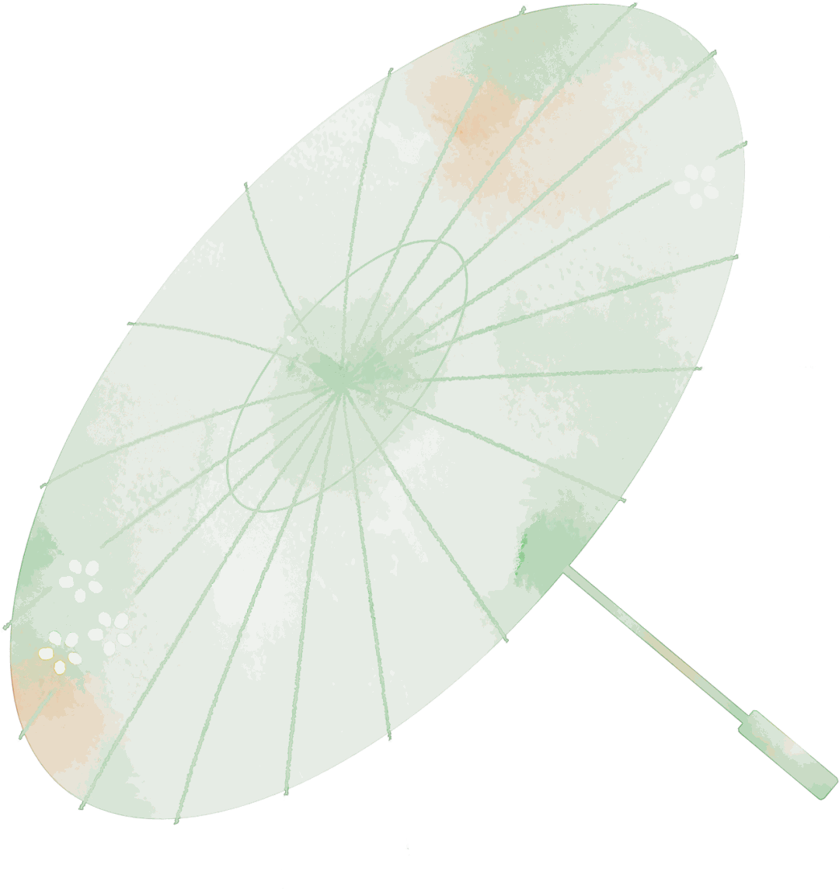
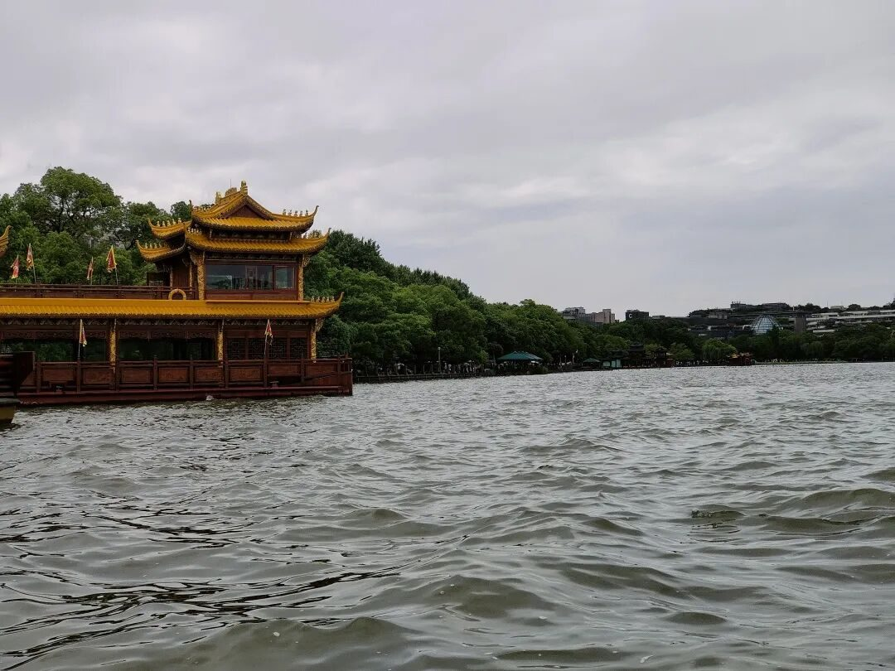
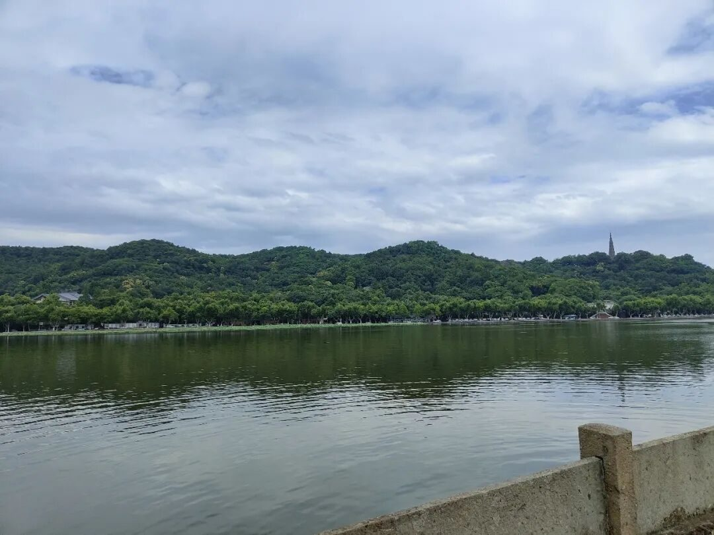
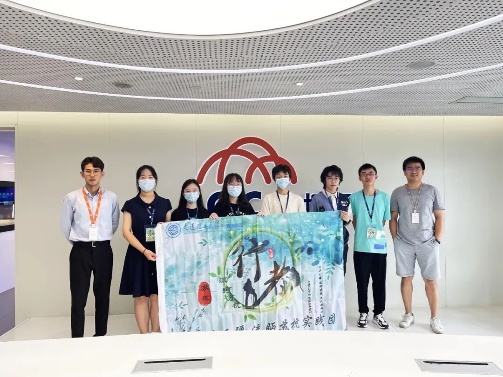
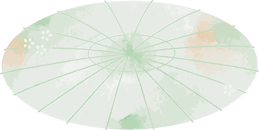

【写意江南】勾留烟雨 智汇杭城

如果将时光倒流三百年，此刻，人在西湖的张岱或许正在花红柳绿的苏堤漫步，或许正在景色清雅的西溪探幽，或许正在岣嵝山房苦读，或许正在龙井闲坐品茗……

JIANGNANYI
江南忆，最忆是杭州。

此行，至杭州，第一站便是乘画舫观览一程这条穿城而过的京杭运河。看着这千百年来滋养着杭州人民，见证着杭州的发展，贯通着杭州这座历史文化名城的血脉的十里运河十处景，不禁心生感慨：杭州，融入有形的灵山秀水中的是说不尽的人文风情。
去游赏西湖时恰遇微雨，西湖的山水，也刚好迷蒙在烟雨中，得以亲眼一见“微雨池塘见，好风襟袖知”的江南之景。

杭州这座有灵魂的城市，是一部用一生都读不完的大书。不必说奇石、秀峰，不必说烟柳、溪水，随便一座庙宇，一座小桥乃至一座亭台，都见证过千百年的风云变幻、悲欢离合，将岁月的沧桑浓缩在一砖一瓦、一草一木中。

与在苏州时不同，我总觉得杭州这座城市更具包容性。
它让我看到的不仅仅是烟柳画桥、风帘翠幕的江南盛景，也不止重湖叠巘的清秀佳丽。更是让第一次来到南方城市的北方孩子倍感亲切。
或许是初到这里的人群中偶有熟悉的乡音，或许是历代以来杭州都处于南北文化的交汇点，又或是这座古老城市奔涌着年轻的血液……
JIANGNANYI
江南忆，智汇是杭州。
在杭州的几日，走在杭州的街道，看着钢铁森林与白墙黛瓦、墨染山水有机结合，感受着这座城市的新房新区新产业。
杭州这座年轻的城市就像被“网”联系了起来，聚集了大批的青年，四溢着年轻的气息。路上随处可见的亚运会会徽“潮涌”、代表地标风景的吉祥物“江南忆”，“心心相融，@未来”的亚运口号更是为这座城市增添了未来感和科技感。

此行参观采访城云科技有限公司，在多媒体智慧城市体验和工作人员的介绍下，我真切的感受到了互联网给生活带来的改变，大数据技术为我们增添的便捷。互联网的发展给相关科技公司的发展带来了推进的同时，相关公司也在为互联网发展助力。

应运而生的互联网文化反映着这些日新月异的变化，它的存在也与互联网、大数据技术一道，让人文关怀在看似冰冷的算法规定之下更有迹可循。

勾留烟雨，智汇杭城。这座城市有过许多美誉——“旅游城市”“人间天堂”“互联网之都”，但仅用任何一个标签来解读杭州都显得有些词不达意。
城市是用来读的，你在这个城市每一点的感触，就是你阅读它的方式。江南烟雨，流转千年古忆，乘风入梦，智慧科技可期。
来源 | 行者无疆实践团
文字 | 崔雨琪
图片 | 行者无疆实践团
排版 | 崔雨琪
审核 | 朱华玮 崔雨琪